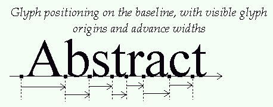
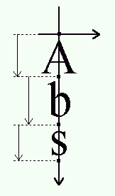

III. Glyph Metrics
1. Baseline, pens and layouts
The baseline is an imaginary line that is used to ‘guide’ glyphs when rendering text. It can be horizontal (e.g., Latin, Cyrillic, Arabic) or vertical (e.g., Chinese, Japanese, Mongolian). Moreover, to render text, a virtual point, located on the baseline, called the pen position or origin, is used to locate glyphs.
Each layout uses a different convention for glyph placement:
-
With horizontal layout, glyphs simply ‘rest’ on the baseline. Text is rendered by incrementing the pen position, either to the right or to the left.
The distance between two successive pen positions is glyph-specific and is called the advance width. Note that its value is always positive, even for right-to-left oriented scripts like Arabic. This introduces some differences in the way text is rendered.
The pen position is always placed on the baseline.

-
With a vertical layout, glyphs are centered around the baseline:

2. Typographic metrics and bounding boxes
A various number of face metrics are defined for all glyphs in a given font.
-
Ascent
The distance from the baseline to the highest or upper grid coordinate used to place an outline point. It is a positive value, due to the grid's orientation with the Y axis upwards.
-
Descent
The distance from the baseline to the lowest grid coordinate used to place an outline point. In FreeType, this is a negative value, due to the grid's orientation. Note that in some font formats this is a positive value.
-
Linegap
The distance that must be placed between two lines of text. The baseline-to-baseline distance should be computed as
linespace = ascent - descent + linegapif you use the typographic values.
Other, simpler metrics are:
-
Bounding box
This is an imaginary box that encloses all glyphs from the font, usually as tightly as possible. It is represented by four parameters, namely
xMin,yMin,xMax, andyMax, that can be computed for any outline. Their values can be in font units if measured in the original outline, or in integer (or fractional) pixel units when measured on scaled outlines.A common shorthand for the bounding box is ‘bbox’.
-
Internal leading
This concept comes directly from the world of traditional typography. It represents the amount of space within the leading which is reserved for glyph features that lay outside of the EM square (like accentuation). It usually can be computed as
internal leading = ascent - descent - EM_size -
External leading
This is another name for the line gap.
3. Bearings and Advances
Each glyph has also distances called bearings and advances. The actual values depend on the layout, as the same glyph can be used to render text either horizontally or vertically:
-
Left side bearing
The horizontal distance from the current pen position to the glyph's left bbox edge. It is positive for horizontal layouts, and in most cases negative for vertical ones.
In the FreeType API, this is also called
bearingX. Another shorthand is ‘lsb’. -
Top side bearing
The vertical distance from the baseline to the top of the glyph's bbox. It is usually positive for horizontal layouts, and negative for vertical ones.
In the FreeType API, this is also called
bearingY. -
Advance width
The horizontal distance to increment (for left-to-right writing) or decrement (for right-to-left writing) the pen position after a glyph has been rendered when processing text. It is always positive for horizontal layouts, and zero for vertical ones.
In the FreeType API, this is also called
advanceX. -
Advance height
The vertical distance to decrement the pen position after a glyph has been rendered. It is always zero for horizontal layouts, and positive for vertical layouts.
In the FreeType API, this is also called
advanceY. -
Glyph width
The glyph's horizontal extent. For unscaled font coordinates, it is
glyph width = bbox.xMax - bbox.xMinFor scaled glyphs, its computation requests specific care, described in the grid-fitting chapter below.
-
Glyph height
The glyph's vertical extent. For unscaled font coordinates, it is
glyph height = bbox.yMax - bbox.yMinFor scaled glyphs, its computation requests specific care, described in the grid-fitting chapter below.
-
Right side bearing
Only used for horizontal layouts to describe the distance from the bbox's right edge to the advance width. In most cases it is a non-negative number:
right side bearing = advance_width - left_side_bearing - (xMax-xMin)
A common shorthand for this value is ‘rsb’.
Here is a picture giving all the details for horizontal metrics:

And here is another one for the vertical metrics:

4. The effects of grid-fitting
Because hinting aligns the glyph's control points to the pixel grid, this process slightly modifies the dimensions of character images in ways that differ from simple scaling.
For example, the image of the lowercase ‘m’ letter sometimes fits a square in the master grid. However, to make it readable at small pixel sizes, hinting tends to enlarge its scaled outline horizontally in order to keep its three legs distinctly visible, resulting in a wider character bitmap.
The glyph metrics are also influenced by the grid-fitting process:
-
The image's width and height are altered. Even if this is only by one pixel, it can make a big difference at small pixel sizes.
-
The image's bounding box is modified, thus modifying the bearings.
-
The advances must be updated. For example, the advance width must be incremented if the hinted bitmap is larger than the scaled one, to reflect the augmented glyph width.
This has some implications:
-
Because of hinting, simply scaling the font ascent or descent might not give correct results. A possible solution is to keep the ceiling of the scaled ascent, and floor of the scaled descent.
-
There is no easy way to get the hinted glyph and advance widths of a range of glyphs, as hinting works differently on each outline. The only solution is to hint each glyph separately and record the returned values (for example in a cache). Some formats, like TrueType, even include a table of pre-computed values for a small set of common character pixel sizes.
-
Hinting depends on the final character width and height in pixels, which means that it is highly resolution-dependent. This property makes correct WYSIWYG layouts difficult to implement.
Performing 2D transformations on glyph outlines is very
easy with FreeType. However, when using translation on
hinted outlines, one should always take care
of exclusively using integer pixel distances (which
means that the parameters to the
FT_Outline_Translate API function should all
be multiples of 64, as the point coordinates are in
26.6 fixed-point format). Otherwise, the translation
will simply ruin the hinter's work, resulting in
very low quality bitmaps!
Note, however, that the restriction to integer pixel distances mentioned in the previous paragraph has become weaker; today, it is quite common to do no hinting along the horizontal axis, only adjusting the glyphs vertically. Typical examples are Microsoft's ClearType implementation, FreeType's new CFF engine (contributed by Adobe), or the ‘light’ auto-hinting mode. For such modes you get best rendering results if you do sub-pixel glyph positioning.
5. Text widths and bounding box
As seen before, the ‘origin’ of a given glyph corresponds to the position of the pen on the baseline. It is not necessarily located on one of the glyph's bounding box corners, unlike many typical bitmapped font formats. In some cases, the origin can be out of the bounding box, in others, it can be within it, depending on the shape of the given glyph.
Likewise, the glyph's ‘advance width’ is the increment to apply to the pen position during layout, and is not related to the glyph's ‘width’, which really is the glyph's bounding box width.
The same conventions apply to strings of text, with the following consequences.
-
The bounding box of a given string of text doesn't necessarily contain the text cursor, nor is the latter located on one of its corners.
-
The string's advance width isn't related to its bounding box dimensions. Especially if it contains leading and trailing spaces or tabs.
-
Finally, additional processing like kerning creates strings of text whose dimensions are not directly related to the simple juxtaposition of individual glyph metrics. For example, the advance width of ‘VA’ isn't the sum of the advances of ‘V’ and ‘A’ taken separately.
Last update: 13-Feb-2018